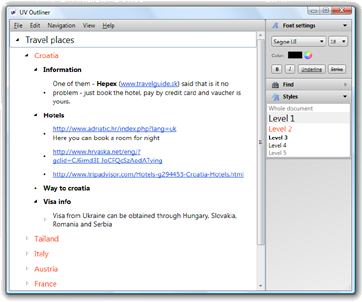

|
|
|
Modern single-pane outliner for Windows UV Outliner is a small and powerful single-pane outliner. It is intended for creating, organizing, and collecting information. With UV Outliner you can create plans, schedules, and to-do lists, collect and organize ideas, brainstorm, plan your trips, record meeting minutes, track expenses, write novels and much more. In general, UV Outliner allows you to work with hierarchical information. FeaturesUV Outliner contains a lot of powerful features. Some of them are described below. One-pane outlineIn one-pane outliner, all parts of the document (either categories or category content) are displayed in the same area. Moreover in outliner with a single pane any part of a document can be a category and a content at the same time. When all your data is in one pane, it is very easy to "play" with content: to move rows up or down, indent or unindent them, create or reorganize structure of a document. Multiline Rich TextEach row in the outline can have multiple lines of a rich text. This means that you can format rows in the outline like in any word processor - you can specify colors, font sizes, etc. Multicolumn supportYour outline document can contain columns. Each column supports rich text as well. StylesStyles in UV Outliner allow you to specify, how to format rows in certain hierarchies. Automatic styling also helps you format the document uniformly while typing. ExportYour outline can be exported to plain text or HTML. PrintingUV Outliner supports printing of the outline. If checkboxes are enabled they will be printed as well. |
"UV Outliner is one of the most useful applications on my PC"
|
||||
|
Copyright © Ultraviolet Software
E-mail: fedir@uvoutliner.com |